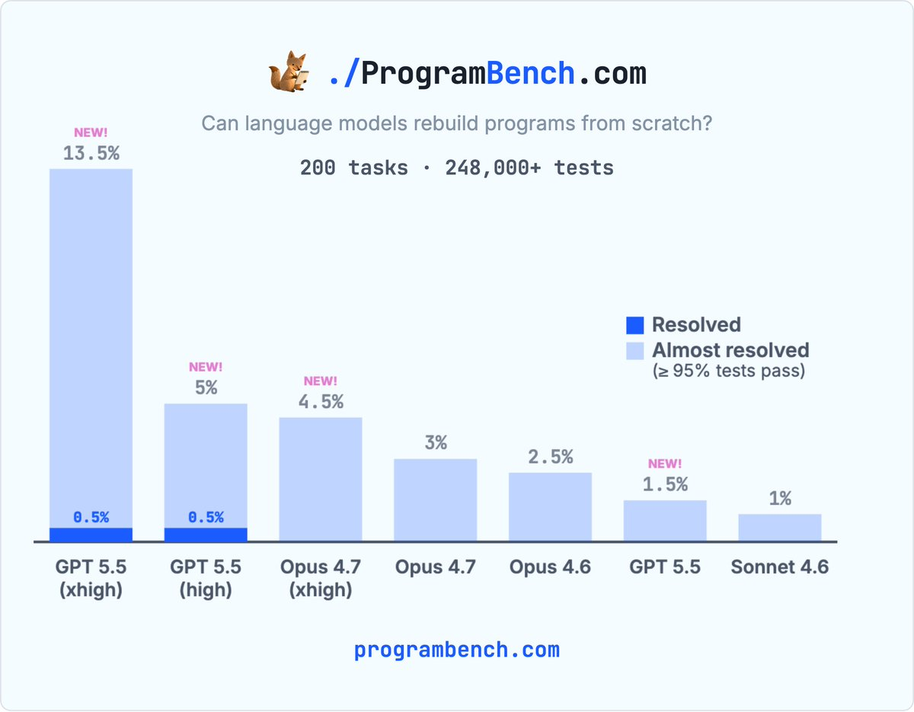
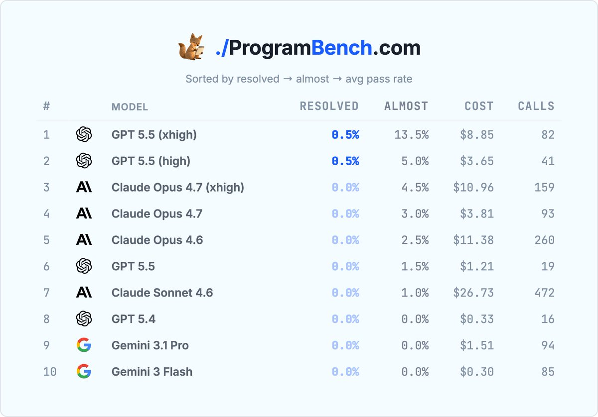
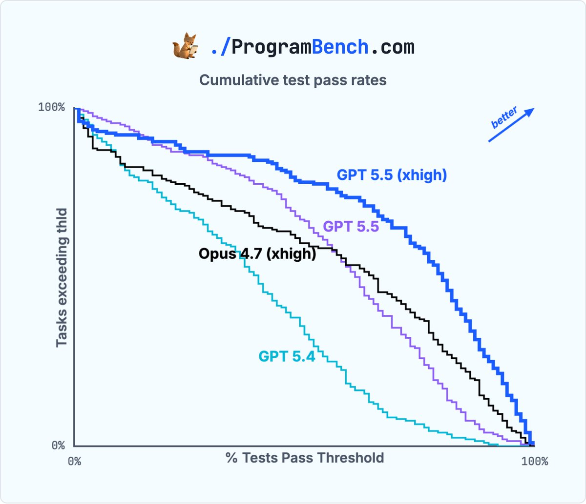
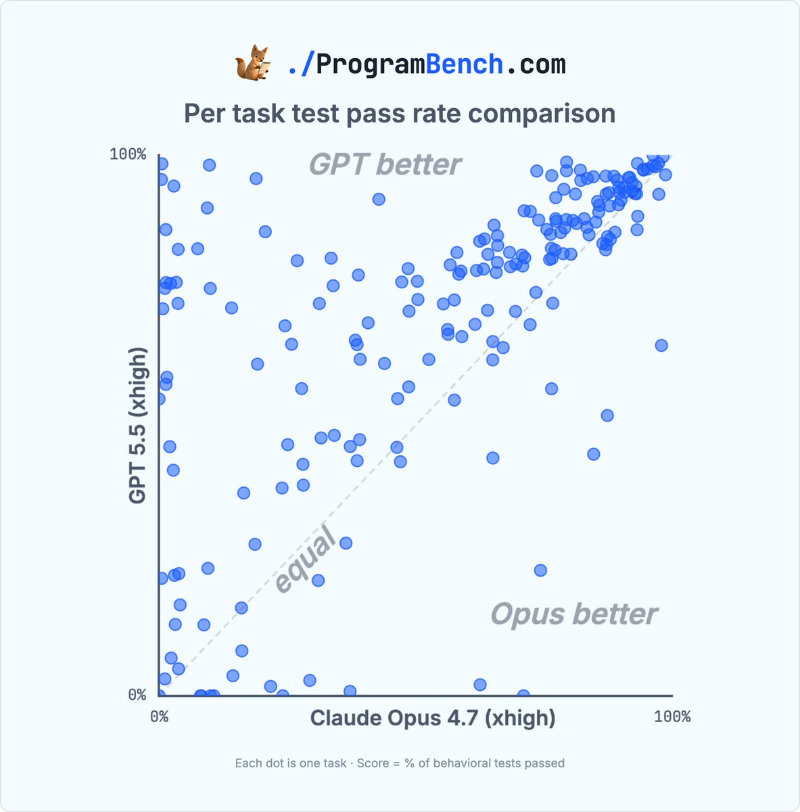

这条 X 线程到底说了什么
主帖的核心信息有三层：第一，ProgramBench 第一个任务被 GPT 5.5 high/xhigh 解出；第二，同一个任务里 high 与 xhigh 走了两条不同语言路线；第三，在这个更新后的 leaderboard 上，GPT 5.5 xhigh 在所有主要指标上明显强于 Claude Opus 4.7 xhigh。

线程的主结论
- GPT 5.5 high 解出
cmatrix，用 C 实现。 - GPT 5.5 xhigh 也解出同一实例，但用 Python 3 实现。
- GPT 5.5 xhigh 的 leaderboard 指标为 0.5% resolved、13.5% almost resolved。
- Claude Opus 4.7 xhigh 在几乎解出比例上为 4.5%，但没有 fully resolved。
作者后续回复补充了什么边界
- 有人问 Opus 4.7 是否跑了 max effort；KLieret 回复说 max 只跑了约一半，到约 4-5k 美元时仍没有拿到 solved instance，且在
>99%、>95%等指标上更弱，所以没有继续跑完。 - 有人问近解实例是否只是被单个坏测试卡住；KLieret 回复说没有系统化拆解，但他们人工检查过
>99%的实例，以确保不是单个坏测试阻止 solved。 - 有人问是否使用完整 SWE-agent；KLieret 明确说用的是一个 minimal scaffold：
mini-swe-agent。
ProgramBench 是什么：不是补函数，也不是修 bug，而是黑盒重建整个程序
传统 coding benchmark 常见形态是：给一个函数签名，让模型补函数；或者给一个现有 repo 和 issue，让 agent 修一个 bug。ProgramBench 的问题更接近“给你一个已经编译好的程序和文档，你能否从零写出一个行为一致的新项目”。
这就是为什么 cmatrix 上 high 用 C、xhigh 用 Python 仍然都能算 solved：ProgramBench 不奖励“像原项目”，而是奖励“黑盒行为一致”。
指标怎么读：resolved 很硬，almost 是细粒度信号
| 指标 | 含义 | 为什么重要 | 容易误读的地方 |
|---|---|---|---|
% Resolved |
200 个 task 中，候选代码通过所有隐藏行为测试、且没有被判 cheating 的比例。 | 这是最硬指标。哪怕只失败一个关键测试，也可能说明程序行为根本不完整。 | 0.5% 不是“总体 0.5 分”，而是 200 个任务里约 1 个任务 fully solved。 |
Almost |
通过至少 95% 行为测试的 task 比例。 | 在 resolved 接近 0 的阶段，它能显示模型是否在大量任务上逼近正确实现。 | 95% tests passed 不等于 95% 功能可用。一个失败测试可能对应很核心的行为缺陷。 |
| 平均 pass rate / 分布图 | 看每个任务通过测试的比例，并画成累积分布或逐任务散点。 | 能看到模型是否只是偶然解出一题，还是在整个任务集合上整体右移。 | 不要把“曲线更靠右”直接解释成所有真实软件能力都更强，它仍受测试覆盖和任务选择影响。 |
| Cost / Calls | 每个任务平均 API 成本和调用次数，博客里的 cmatrix 表还列了单次轨迹成本与调用。 |
ProgramBench 是 agentic benchmark；同样分数下，成本和调用次数决定它是否有工程可用性。 | 成本不是纯模型能力指标，受 pricing、prompt、agent loop、停止策略影响。 |

cmatrix 首个 resolved 实例：模型到底做了什么
cmatrix 是经典终端“黑客帝国数字雨”程序。这个任务不是让模型读源码，而是让它通过文档、man page、运行原二进制、观察输出/错误/exit code，自己推断 CLI 行为并重写。
| Run | Failures | 语言/实现路线 | Cost | API calls | 解读 |
|---|---|---|---|---|---|
| GPT 5.5 high | 0 | C，raw ANSI escape sequences | $3.17 | 34 | 探索足够但不拖沓：约 10 轮探索、40+ flag 组合，然后一次性写 C 实现并做少量补丁。 |
| GPT 5.5 xhigh | 0 | Python 3 | $4.84 | 40 | 更强探索路线：约 27 步系统 probing CLI path，再写一个自包含 Python 文件。 |
| GPT 5.5 | 3 | C，raw ANSI escape sequences | $1.04 | 17 | 低成本但未 fully resolve；说明底座能力不是唯一变量，推理预算/探索深度确实改变结果。 |
| Claude Opus 4.7 xhigh | 19 | C，ncurses | $10.74 | 178 | 有复杂系统工程操作，但最终在细节行为上失败。更多调用不自动等于更高测试通过率。 |
关键 insight：cmatrix 不是一个算法题，而是“行为规格恢复”题。模型必须决定应该探索哪些 CLI 路径、哪些错误输入、哪些 exit code、哪些终端控制行为。GPT 5.5 的优势不只是会写代码，而是探索路径更有效，能把黑盒行为转成足够完整的实现规格。
为什么说 GPT 5.5 xhigh 对 Opus 4.7 xhigh 是“整体优势”
如果只看 cmatrix，可能会误以为这是一次偶然的“单题击穿”。线程中的分布图和散点图说明更强的点：GPT 5.5 xhigh 不只是多解出一题，而是在大量任务上 pass-rate 分布整体更靠右。


但这个“整体优势”仍然有边界
- 它是在
mini-swe-agentscaffold、固定 ProgramBench 任务、当前隐藏行为测试套件下的优势，不自动代表所有 coding agent 系统或所有真实开发任务。 - ProgramBench 的 resolved 仍然很低：GPT 5.5 xhigh 是 0.5%，也就是约 1/200；剩下绝大多数任务仍未完全解决。
Almost指标很有信息量，但不能当作“程序基本可用”。很多软件里 5% 的行为缺口可能是安全、兼容性或关键边界条件。- 行为测试不能覆盖无限输入空间；ProgramBench 官方也强调测试可以扩展，false positive 出现时可增加测试。
这件事为什么重要
1. 它评估的是“软件项目级生成”，不是局部代码补全
ProgramBench 逼迫 agent 做架构选择、语言选择、依赖选择、构建脚本、错误处理、输入输出兼容。它更接近真实“从规格写软件”，也更能区分模型是否会系统性探索问题空间。
2. 它把“推理预算”变成可见变量
同一 GPT 5.5 在普通、高、xhigh 设置下表现差异非常大。普通 GPT 5.5 在 cmatrix 上仍有 3 个 failures；high/xhigh 完全通过。这说明在这类任务里，额外推理不是简单的“多想一会儿”，而是改变探索覆盖和实现完整性。
3. 它暴露了 agent 的真实短板
模型常常能写出一个“看起来像”的程序，但会漏掉大小写、错误码、边界 flag、文件副作用等细节。ProgramBench 的价值正在于这些细节：工程可用的软件不是 demo，而是行为兼容。
一句话判断
这条线程最值得看的不是“GPT 5.5 比 Opus 4.7 强”这种榜单结论，而是：当评测从局部修 bug 变成黑盒重建程序时，模型能力的瓶颈从“会不会写代码”转移到“会不会设计探索策略、建立行为规格、持续验证实现”。
换句话说，ProgramBench 更像在测一个 agent 的小型软件工程闭环：读材料、提出假设、运行实验、抽象规格、写实现、跑测试、修边界。GPT 5.5 high/xhigh 的突破，是这个闭环第一次在一个任务上完整闭合。
我的 Insight：这不是“编程被解决”，而是 coding benchmark 的难度重新抬高了
ProgramBench 的意义在于它把“写代码”从文本生成问题重新拉回软件工程问题。过去很多 benchmark 的接口太干净：输入是题目，输出是函数；或者输入是 issue，输出是 patch。模型不需要真正理解一个完整程序的操作面、错误语义、构建系统、依赖约束和用户可见行为。
但真实软件很少只由 happy path 组成。真实软件的“规格”常常散落在 README、man page、help 输出、错误信息、默认值、历史兼容、exit code 和文件副作用里。ProgramBench 的黑盒重建设定正好逼模型面对这些东西。它不是逆向工程比赛的炫技，而是对 agent 研发很有用的压力测试：你的 agent 是否能把不完整文档变成可验证的行为模型？
我对这次结果的判断是：显著，但不该夸大。显著之处在于，之前论文里的最好模型 0% resolved，而 GPT 5.5 high/xhigh 把 resolved 从 0 推到 0.5%，并把 almost resolved 拉到 13.5%。这在一个 200 task、248k+ tests 的困难 benchmark 上是实质进展。不该夸大之处在于，0.5% 仍然意味着 199 个任务没解完；它更像“冰面出现第一条裂缝”，不是“湖已经化开”。
工程上最值得学的是：未来 coding agent 的改进可能不只来自更强模型，还来自更好的探索协议。比如让 agent 系统性枚举 CLI flag、做 differential probing、记录 exit code、生成自己的 behavior checklist、回归测试每次 patch。GPT 5.5 的结果说明模型本身更强；ProgramBench 的设置则提醒我们，agent harness 如何把推理预算转化成有效实验，同样关键。
术语解释与概念边界
- 项目级代码生成
- 不是补全一个函数，而是在已有仓库约束下修改多个文件、保持接口一致并让测试通过。
- Pass@k
- 同一任务采样 k 次，只要其中一次通过就算成功；它反映搜索预算收益，但不等于单次交付可靠性。
- 仓库上下文
- 包含目录结构、依赖、测试、历史约定和隐藏耦合；模型如果只看题面，往往会写出局部正确但项目不可运行的补丁。
- 测试通过率
- 是最硬的自动信号，但只覆盖测试写到的行为；未覆盖的边界、性能和安全问题仍需要人工 review。
证据边界与资料索引
X 线程
通过公开页面 按仓库规范读取 twitter thread，抓到原帖、主线程、作者后续回复和 4 张配图。原始线程 JSON 用于核对正文、作者回复和配图。
官方材料
交叉阅读 ProgramBench 官网、官方博客、GitHub README 与 arXiv 论文 2605.03546。官网/论文负责解释 benchmark；博客负责解释 GPT 5.5 的首次 resolved。
证据图
线程中的 4 张图已整理到站内同名 assets 目录，分别覆盖 leaderboard、主柱状图、累积分布和 GPT 5.5 xhigh 对 Opus 4.7 xhigh 的逐任务散点图。
local imagesvalidation